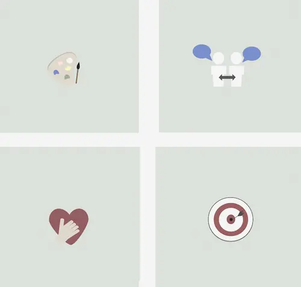
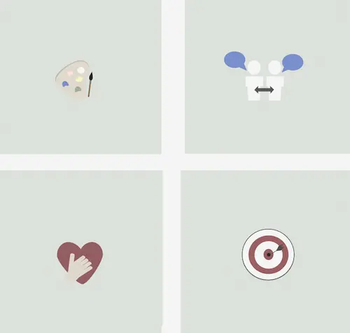

Tema 6
Portfolio eksamen
Tema beskrivelse
I Tema 6 lavede vi portfolio eksamen som er dette produkt. Her har kan i se min proces og design proccesen bag det, med min logbog i figma og hvordan jeg er gået fra wireframes til udviklingen af dette website.
Design
Jeg har blandt andet lavet mit cv og mine styrker ikonerne i figma. har har jeg bare brugt simple værktøjer som cirkel og andre former til at skabe i ikonerne og så tilføjet tekst.
Link til Figma:
Figma logbog 

Tema 6
Portfolio eksamen
I Tema 2 lærte vi om grundlæggende web. Vi lavede en masse øvelser der gav os basal viden om kodning og lærte os at bruge værtøjer og genveje i vs-code. Vi lavede udover det en studiestartsprøve, der gav os viden og erfaring inden for grundlæggende html og css kodning og lærte generelle css-stylings redskaber, såsom baggrundsfarve, border og knapper
Virksomhedssite
Vi lavede en studiestartsprøve, der gav os indblik i grundlæggende html, css, grid og genveje i visual studio code. Her lærte vi også om media queries og om at kode side til både mobilsite størrelse og desktop størrelse. Vi brugte generelle css-stylings redskaber, såsom baggrundsfarve, border og knapper, dette kan også ses på blandt andet forsiden af sitet.
Link til Figma:
Figma logbog